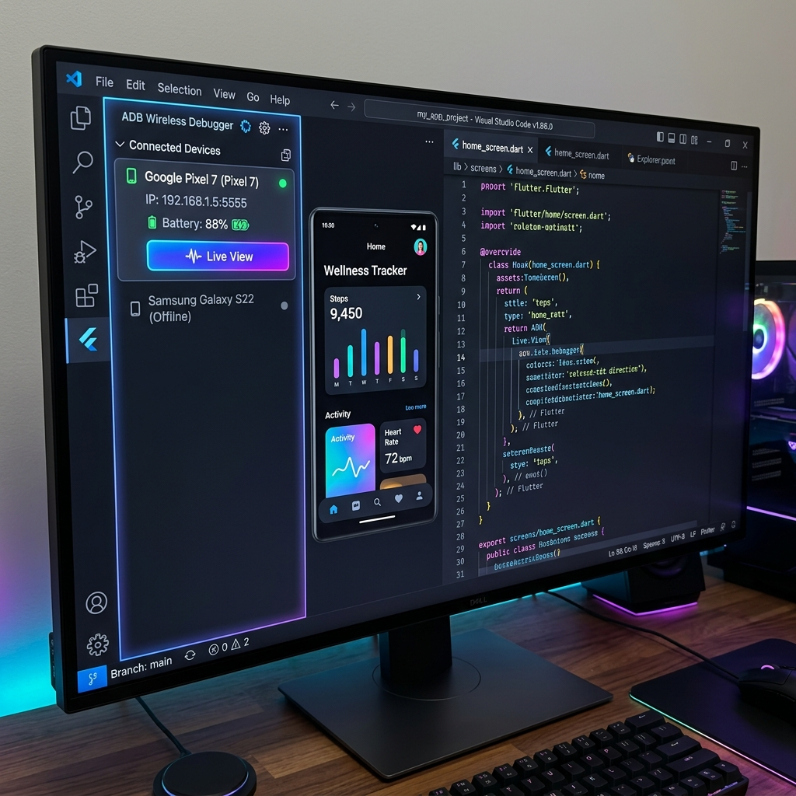

Wireless Android Debugging,
Redefined.
Connect, pair, view logs, and mirror your Android device screen seamlessly in real-time, right from your Visual Studio Code.

Powerful Features
Everything you need for seamless wireless debugging in one extension.
Buttery Smooth Live View
Fully redesigned screen mirroring streaming at 30+ FPS using native H.264 video stream. Experience minimal delay.
Elegant Sidebar Dashboard
A sleek, unified control panel to quickly connect, pair, and manage your devices directly from the VS Code sidebar.
Smart Network Auto-Discovery
Automatically scans your LAN using mDNS/DNS-SD and ARP lookups to find debug-ready Android devices instantly.
Rich Device Insights
View device states, OS versions, and real-time battery percentages. Inline controls for Logcat, Live View, and more.
How it Works
Get up and running in seconds.
Install Prerequisites
Ensure ADB (Android Debug Bridge) is installed and added to your system's PATH variable.
Enable Wireless Debugging
Connect your Android device to the same local network and enable "Wireless Debugging" in Developer Options.
Connect & Play
Use Auto-Discover, Pair via QR, or Pair via Code from the VS Code sidebar to connect instantly and start debugging!